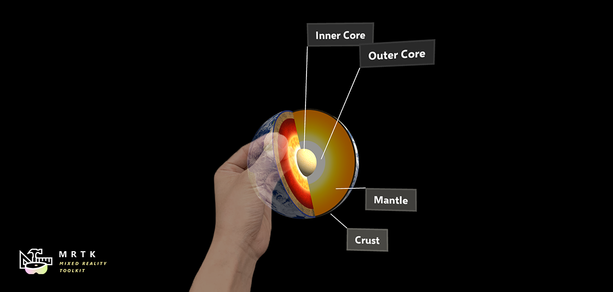

对象操纵器 Object manipulator

ObjectManipulator是操作行为的新组件，以前在ManipulationHandler中可以找到。object manipulator作了一些改进和简化。这个组件是manipulation handler的替代，manipulation handler将被弃用。
使用一个或两个指针，ObjectManipulator脚本可以使对象可移动、可伸缩和可旋转。可以配置object manipulator来控制对象如何响应各种输入。该脚本应该与大多数形式的交互工作，如HoloLens 2 全关节手，HoloLens 2手射线，HoloLens 1凝视和手势和沉浸式头显运动控制器输入。
如何使用 object manipulator
要使用object manipulator，首先要将ObjectManipulator脚本组件添加到GameObject。同时确保在对象中添加一个collider，以匹配它的可抓取边界。
要使对象响应近处全关节手输入，还需要添加NearInteractionGrabbable脚本。
通过向对象添加刚体组件，可以为object manipulator启用物理行为。在Physics and collisions中更详细地讨论了添加这个组件所启用的物理行为。
此外，还可以通过向对象添加manipulation constraint组件来约束操纵。这些是处理manipulation并以某种方式改变操纵行为的特殊组件。

Inspector 属性和字段

通用属性
Host transform
将被操作的对象进行变换。默认为附加组件的对象。
操纵属性 Manipulation type
指定是否可以用一只手或两只手操纵对象。因为这个属性是一个标志，所以两个选项都可以被选中。
- One handed: 如果选中，启用单手操纵。
- Two handed: 如果选中，启用双手操纵。
允许远操纵 Allow far manipulation
指定操纵是否可以使用与指针的远程交互来完成。
单手 manipulation 属性
单手远操纵模式 One hand rotation mode near
指定当用一只手近处抓握对象的行为。这些选项仅适用于全关节手。
Rotate about object center: 使用手的旋转进行物体旋转，但绕物体中心点旋转。当物体旋转时，它看起来移动得少，但可能会有一种手和物体之间断开的感觉。对于远程交互更有用。
Rotate about grab point: 用手旋转物体，旋转点是拇指和食指之间的抓取点。它应该感觉就像物体是由手拿着的。
单手远旋转模式 One hand rotation mode far
指定在远距离单手抓取时对象的行为方式。这些选项仅适用于全关节手。
Rotate about object center: 用手旋转物体，但绕物体中心点旋转。适用于在物体旋转时物体中心不移动的情况下进行远距离检查。
Rotate about grab point: 旋转物体使用手的旋转，旋转点为指针射线命中点。用于检查。
双手 manipulation 属性
双手远操纵模式 Two handed manipulation type
指定两个手操纵如何转换对象。因为这个属性是一个标志，所以可以选择任意数量的选项。
- Move: 如果选中，移动是允许的。
- Scale: 如果选中，允许缩放。
- Rotate: 如果选中，允许旋转。
约束 Constraints
添加约束 Add constraint
此按钮允许直接从object manipulator检查器添加约束组件。项目中的所有约束在这里都应该是可见的。有关更多信息，请参见transform constraints。
跳转到组件 Go to component
在对象上发现的所有约束将在这里列出，并带有一个Go to component按钮。此按钮将导致inspector滚动到选中的约束组件，以便对其进行配置。
物理 Physics
释放行为 Release behavior
指定被操纵对象在释放时应保持哪些物理属性。要求rigidbody 组件位于该对象上。因为这个属性是一个标志，所以两个选项都可以被选中。
- Keep Velocity: 释放对象时，如果选择此选项，将保持其线速度。
- Keep Angular Velocity: 释放物体时，如果选择此选项，物体将保持角速度。
平滑 Smoothing
Smoothing active
指定平滑是否激活。
Move lerp time
对运动的平滑量。平滑为0表示没有平滑。最大值意味着不改变值。
Rotate lerp time
用于旋转的平滑量。平滑为0表示没有平滑。最大值意味着不改变值。
Scale lerp time
用于缩放的平滑量。平滑为0表示没有平滑。最大值意味着不改变值。
操纵事件 Manipulation events
Manipulation handler提供以下事件:
- OnManipulationStarted: 在操纵开始时触发。
- OnManipulationEnded: 在操纵结束时触发。
- OnHoverStarted: 当手/控制器将可操纵对象悬停时触发，从近处或远处。
- OnHoverEnded: 当手/控制器将可操纵对象移开时触发，从近处或远处。
操纵的事件激发顺序为:
OnHoverStarted -> OnManipulationStarted -> OnManipulationEnded -> OnHoverEnded
如果没有操纵，你仍然会得到悬停事件与以下激发的顺序:
OnHoverStarted -> OnHoverEnded
变换约束 Transform constraints
约束可以用来以某种方式限制操纵。例如，一些应用程序可能需要旋转，但也要求对象保持直立。在这种情况下，可以向对象添加一个 RotationAxisConstraint，用于将旋转限制为y轴旋转。MRTK提供了一些约束，所有这些约束将在下面进行描述。
还可以定义新的约束，并使用它们创建某些应用程序可能需要的惟一操纵行为。为此，创建一个从TransformConstraint继承的脚本，并实现抽象的 ConstraintType 属性和抽象的ApplyConstraint方法。在向对象添加新的约束之后，它应该以定义的方式约束操纵。这个新的约束也应该显示在object manipulator约束字段中。
MRTK提供的所有约束均具有以下性质:
目标变换 Target Transform
被约束的被操纵对象的变换。这应该与ObjectManipulator Host transform相同。默认为组件的对象。
手类型 Hand Type
指定约束是用于单手操纵、双手操纵还是同时用于两种操纵。因为这个属性是一个标志，所以两个选项都可以被选中。
- One handed: 如果选中，将在单手操纵期间使用约束。
- Two handed: 如果选中，将在双手操纵期间使用约束。
接近类型 Proximity Type
指定约束是用于近操纵、远操纵还是同时用于这两种操纵。因为这个属性是一个标志，所以两个选项都可以被选中。
- Near: 如果选中，将在近操纵期间使用约束。
- Far: 如果选中，将在远操纵期间使用约束。
FaceUserConstraint
当将此约束附加到对象时，旋转将受到限制，以便该对象始终面向用户。这对于slates或平面非常有用。 FaceUserConstraint的属性如下:
Face away
如果为真，则对象背对用户。
FixedDistanceConstraint

此约束确定了操纵开始时被操纵对象与另一个对象转换之间的距离。这对于固定从被操纵对象到头部transform的距离等行为是有用的。FixedDistanceConstraint的属性如下:
Constraint transform
这是另一个变换，被操纵对象到它的距离是固定的。默认为到相机的位置。
FixedRotationToUserConstraint

此约束修复了用户和被操纵对象在被操纵时的相对旋转。这对于slates或平面非常有用，因为它可以确保被操纵的对象始终向用户显示与操纵开始时相同的朝向。
FixedRotationToUserConstraint 没有任何唯一的属性。
FixedRotationToWorldConstraint

此约束修复了被操纵对象在被操纵时的全局旋转。这对于不应该通过操纵进行旋转的情况非常有用。FixedRotationToWorldConstraint 没有任何独特的属性:
MaintainApparentSizeConstraint

当这个约束被附加到一个对象上时，不管这个对象离用户有多远，它对用户来说都会保持相同的外观尺寸(也就是说，它会占据用户视场的相同比例)。这可以用来确保操纵 slate或文本面板时保持可读性。MaintainApparentSizeConstraint没有任何唯一的属性:
MoveAxisConstraint
此约束可用于确定操纵对象可沿哪个轴移动。这对于在平面或直线上操纵对象非常有用。MoveAxisConstraint 的属性如下:
对移动的约束 Constraint on movement
指定要防止在哪个轴上移动。默认情况下，这些轴将是全局的，而不是本地的，但这可以在下面进行更改。因为这个属性是一个标志，所以可以选择任意数量的选项。
- X Axis: 如果选择，沿X轴的移动受到限制。
- Y Axis: 如果选择，沿Y轴的移动受到限制。
- Z Axis: 如果选择，沿Z轴的移动受到限制。
使用本地坐标进行约束 Use local space for constraint
如果为真，将约束相对于被操纵对象的局部变换轴。默认为False。
RotationAxisConstraint

此约束可用于确定被操纵对象可以旋转的轴。这对于保持被操纵的对象垂直，但仍然允许y轴旋转是很有用的。RotationAxisConstraint的属性如下:
对旋转的约束 Constraint on rotation
指定防止旋转的轴。默认情况下，这些轴将是全局的，而不是本地的，但这可以在下面进行更改。因为这个属性是一个标志，所以可以选择任意数量的选项。
- Y Axis: 如果选择，绕Y轴的旋转受到限制。
- Z Axis: 如果选择，绕Z轴的旋转受到限制。
- X Axis: 如果选择，绕X轴的旋转受到限制。
使用本地坐标进行约束 Use local space for constraint
如果为真，将约束相对于被操纵对象的局部变换轴。默认为False。
MinMaxScaleConstraint

此约束允许为操纵对象的scale设置最小值和最大值。这对于防止用户缩放太小或太大的对象非常有用。MinMaxScaleConstraint 的属性如下:
Scale minimum
操纵时的最小scale值。
Scale maximum
操纵时的最大scale值。
Relative to initial state
如果为真，那么上面的值将被解释为相对于对象初始的scale的值。否则将被解释为绝对scale值。
物理和碰撞
物理行为可以通过将刚体组件添加到与object manipulator相同的对象来启用。这不仅支持上面的 释放行为 配置，还支持碰撞。如果没有刚体组件，在操纵过程中碰撞就不能正常运行:
被操纵对象与静态碰撞器(即具有碰撞器但没有刚体的对象)之间的碰撞不起作用，被操纵对象直接通过静态碰撞器而不受影响。
被操纵物体与刚体之间的碰撞(例如一个同时具有碰撞器和刚体的物体)会使刚体产生碰撞反应，但这种反应是跳跃的和不自然的。在被操纵的对象上也没有碰撞响应。
当加入刚体时，碰撞应该能正常工作。
没有 rigidbody

具有 rigidbody